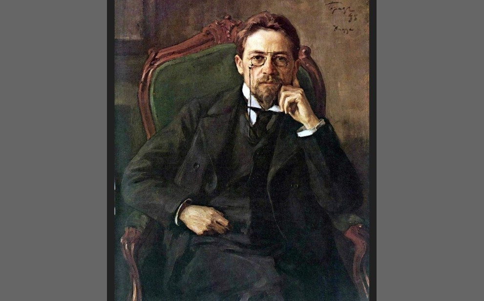

Làm sao để biết khi 90 tuổi, khi nhìn lại mình sẽ hối tiếc điều gì nhất?

Dạo gần đây có tuổi rồi nên tự nhiên trong đầu mình nảy ra ý tưởng là, "làm sao để biết khi 90 tuổi khi nhìn lại mình sẽ hối tiếc điều gì nhất?".
Hỏi câu này để mình biết, tại thời điểm bây giờ, ngay lúc này mình cần làm gì, để đến khi 90 (thôi 80 tuổi cũng được) mình sẽ không hối tiếc.
Mình cũng chẳng biết hỏi ai. Thì mình hỏi A.I.
Mình ước là có ai đó nói cho mình biết sớm sớm thì mình đã tiết kiệm được chục năm loay hoay rồi.
Và A.I trả lời cho mình như sau:
Nếu nhìn cuộc đời như một bài toán dài hạn, thì “không hối tiếc” không phải là làm theo cảm xúc ở từng thời điểm, mà là ra quyết định có ý thức về cái giá mình đang trả
Ở tuổi 90, bạn không nhìn lại từng khoảnh khắc riêng lẻ. Bạn nhìn lại quỹ đạo cuộc đời — và quỹ đạo đó được tạo nên từ hàng nghìn lựa chọn nhỏ, lặp lại mỗi ngày.
1. Đừng trì hoãn cuộc sống — nhưng cũng đừng tiêu trước tương lai
Cuộc đời không bắt đầu ở một thời điểm “lý tưởng” nào đó trong tương lai.
Nhưng tương lai của bạn cũng không tự nhiên mà có.
Mỗi ngày bạn đang:
◦ tích lũy sức khỏe
◦ tích lũy kỹ năng
◦ tích lũy tài chính
→ Sống trọn vẹn không có nghĩa là bỏ qua tích lũy.
→ Tích lũy thông minh là cách để bạn có nhiều lựa chọn hơn về sau.
2. Sức khỏe là nền tảng của mọi trải nghiệm
Ở cuối đời, sự khác biệt lớn nhất không nằm ở bạn có bao nhiêu tiền,
mà là bạn còn làm được gì với cơ thể của mình.
Sức khỏe vận hành theo quy luật tích lũy:
◦ thói quen tốt → lãi kép
◦ thói quen xấu → “nợ xấu” với lãi suất cao
→ Những gì bạn làm với cơ thể ở tuổi 20–40 sẽ được “thu hồi” ở tuổi 60–80.
3. Chấp nhận rủi ro — nhưng theo cách có thể quay lại
Không phải điều gì “chưa làm” cũng đáng tiếc.
Chỉ những điều bạn có khả năng làm nhưng không dám thử mới ám ảnh lâu dài.
Nhưng thử không có nghĩa là đặt cược mù quáng.
Một nguyên tắc đơn giản:
◦ Ưu tiên những lựa chọn có downside giới hạn
◦ Và upside mở rộng
→ Bạn không cần all-in để sống một cuộc đời đáng nhớ.
→ Bạn cần thiết kế rủi ro hợp lý.
4. Đừng để mình bị loại khỏi cuộc chơi
Thế giới thay đổi theo cấp số nhân, đặc biệt trong những ngành trí tuệ.
Nếu bạn ngừng học:
◦ kỹ năng lỗi thời
◦ cơ hội thu hẹp
◦ khả năng quay lại giảm dần theo thời gian
→ Học không chỉ để phát triển.
→ Học để duy trì khả năng lựa chọn.
5. Mối quan hệ là “hạ tầng” của cuộc đời
Khi mọi thứ ổn, bạn có thể không nhận ra giá trị của người khác.
Khi biến cố xảy ra, bạn sẽ hiểu.
Ở cuối đời, điều còn lại không phải là danh sách liên hệ dài, mà là vài người:
◦ hiểu bạn
◦ tin bạn
◦ và sẵn sàng ở lại
→ Đầu tư vào mối quan hệ không phải là cảm xúc thuần túy, mà là một dạng tài sản dài hạn.
6. Bao dung với bản thân — nhưng không buông xuôi
Ai cũng sẽ có sai lầm.
Nếu bạn mang chúng theo suốt 30–40 năm, đó là một chi phí tâm lý rất lớn.
Nhưng bao dung không có nghĩa là:
◦ bỏ qua trách nhiệm
◦ hay lặp lại sai lầm
→ Cách tốt nhất là:
◦ học đủ từ sai lầm
◦ rồi đóng lại và đi tiếp
7. Điều thực sự quyết định “có hối tiếc hay không”
Không phải là bạn đã chọn con đường nào.
Mà là khi chọn, bạn có:
◦ hiểu rõ trade-off (sự đánh đổi)
◦ và chấp nhận nó một cách có ý thức
Bạn có thể sống an toàn và vẫn hạnh phúc.
Bạn cũng có thể mạo hiểm và thấy xứng đáng.
Nhưng nếu bạn chọn một cách mơ hồ — đến cuối đời, rất khó để không tự hỏi:
“Liệu mình đã có thể làm tốt hơn không?”
Kết lại
Sống để không hối tiếc không phải là sống không tính toán.
Mà là sống với sự rõ ràng:
◦ rõ mình đang đánh đổi gì
◦ rõ mình đang xây dựng gì
◦ và rõ mình đang hướng tới đâu
Khi có đủ sự rõ ràng đó, dù kết quả thế nào, bạn cũng sẽ không cần hối tiếc.